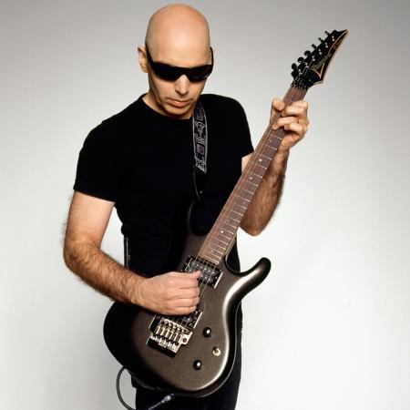
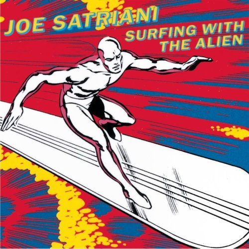

JOE SATRIANI

{kind=link}
Joe Satriani es, tal vez, el único "solista", junto a Steve Vai, que ha rebasado con creces el ámbito de la guitarra y el mundo de los guitarristas, por norma general, herméticos y algo encerrados en si mismos. Pocos artistas pueden jactarse de haber vendido más de diez millones de discos en solitario, algo imposible de hacer para los "shredders" que se dirigen al público guitarrístico, o de haber logrado la friolera de quince nominaciones a los Grammy, a pesar de hacer música instrumental en el ámbito de rock. Además, ha tocado con The Rolling Stones, Deep Purple, Mick Jagger, Steve Ray Vaughan, Sammy Hagar, Andy Timmons, Steve Vai, Yngwie Malmsteen... Si analizamos el éxito de Satch, puede que tenga mucho que ver su concepción de la música y su altísimo nivel de composición. Las canciones son casi vocales, puesto que están perfectamente estructuradas con el método estrofa-puente-estribillo. No se trata de solos eternos a lo largo de un monótono disco, no es un soliloquio aburrido para todo aquél que no esté inmerso en el mundo de la guitarra. Los temas de Satch tienen melodías que cualquiera puede cantar, estribillos memorables, sensaciones que llegan al oyente, solos explosivos y muchas dosis de buen rock & roll, al estilo más clásico. Satriani ha sido, y es, la fusión perfecta entre el mundo del rock clásico, el feel, el virtuosismo, y la innovación técnica.
Joe Satriani nace el 15 de julio de 1956 en Nueva York. Tras una infancia no demasiado influenciada por la música, descubre la guitarra eléctrica a través de la figura de Jimi Hendrix a los 14 años de edad, el mismo día que Jimi Hendrix muere trágicamente. Como curiosidad, Satch decidió abandonar el fútbol americano, deporte que practicaba, para poder emplear su tiempo en el estudio de la guitarra. Comienza a estudiar música en el Five Towns College. Resulta sorprendente saber que, a los 16 años, con tan solo dos de experiencia con la guitarra, ya era profesor. A lo largo de su vida ha dado clases, entre otros, a Steve Vai, Alex Skolnik (Testament, AS Trio), Kirk Hammett, Tom Morello (RATM), o Reb Beach (Dokken, Winger, Whitesnake...). En 1974 comienza a recibir clases de Lennie Tristano, conocido guitarrista y pianista de jazz, estilo que no abandona nunca en la intimidad, si bien su faceta compositiva está claramente orientada al rock. Cuatro años después, Satch decide dar el gran salto y se muda a Berkeley, California, para estudiar música profesionalmente en la prestigiosa universidad de la ciudad, Berklee, donde continúa su actividad como docente, que siempre ha considerado reconfortante. Aún así, no es hasta 1984 cuando un maduro Satriani, ya con casi treinta años, saca su primer EP, "The Joe Satriani EP". En esa época Joe mostraba una imagen rockera, con chupas de cuero, gafas de sol, y una lustrosa melena, algo muy alejado de la imagen que le daría a conocer en todo el mundo. A pesar de la calidad de su trabajo, el EP no alcanza el éxito comercial, aunque ayuda a Satch a convertirse en un músico reputado en la escena californiana y llama la atención de algunos sellos independientes. Dos años después, ya con 30 años, se publica su primer LP, Not of this earth. Si bien el disco obtiene una buena cifra de ventas, Joe continúa lejos de otros guitarristas mucho más populares, como Eddie Van Halen. Aún así, su fama comienza a extenderse entre músicos de la talla de Allan Holdsworth, o el propio Van Halen, quienes hacen referencia a Satriani como el nuevo "golden boy" de la guitarra eléctrica.
{kind=link}
Nulla ac dui turpis. Aenean ultrices, odio quis suscipit adipiscing, tortor ante adipiscing mauris, nec faucibus augue sapien quis nisl. Nullam dolor quam, aliquet a rhoncus vel, imperdiet quis velit. Class aptent taciti sociosqu ad litora torquent per conubia nostra, per inceptos himenaeos. Mauris at enim in odio egestas fermentum. Suspendisse eu sem lorem, vel gravida quam. Vivamus enim leo, viverra eget fringilla at, porttitor vel magna. Cras eu felis suscipit tortor pulvinar porta. Aenean bibendum lacinia scelerisque. Nulla massa massa, feugiat in pellentesque ac, venenatis id tellus. Sed aliquam, nunc id porta mattis, mauris diam dignissim enim, at lacinia quam turpis at nibh. Sed posuere dignissim eleifend. Quisque dictum blandit quam et interdum. Pellentesque sollicitudin feugiat quam non blandit. Quisque viverra orci sed nisl mattis at viverra erat eleifend.
Integer dignissim ornare lobortis. Aenean quis turpis tellus. In iaculis, ligula sit amet elementum fermentum, nulla tellus consequat erat, nec dictum sapien nisi vitae nisi. Curabitur tincidunt faucibus felis, at feugiat tortor mollis id. Integer quis sem ac metus tincidunt rutrum. Suspendisse potenti. Nunc rhoncus feugiat fringilla. Suspendisse posuere, turpis ac consequat mollis, urna purus vulputate erat, at mollis lectus risus ut lectus. Duis non risus lorem, nec vulputate dui. Vestibulum sit amet dolor tortor, vel cursus velit.
Duis tempor magna vel nisl tempus a ornare velit luctus. Sed risus neque, egestas vel malesuada at, tempor nec diam. Nulla justo magna, consequat nec sodales at, lacinia sit amet quam. Cras lacinia interdum accumsan. Suspendisse dapibus sollicitudin felis sit amet lobortis. Praesent sed massa a nisl rutrum tempor. Sed eros neque, faucibus nec consequat eu, elementum eget nibh. Maecenas dui nulla, consectetur faucibus auctor ac, scelerisque quis nulla. Sed mattis tristique neque, vitae placerat lorem sodales at. Maecenas luctus eleifend felis, vel interdum neque dignissim vitae. Quisque non erat a quam adipiscing consequat ac nec nunc. Praesent ullamcorper elit a neque rhoncus rutrum. Nullam hendrerit lacus eget odio auctor sed aliquet urna imperdiet. Fusce eleifend ornare turpis vitae rutrum. Donec eu feugiat eros.